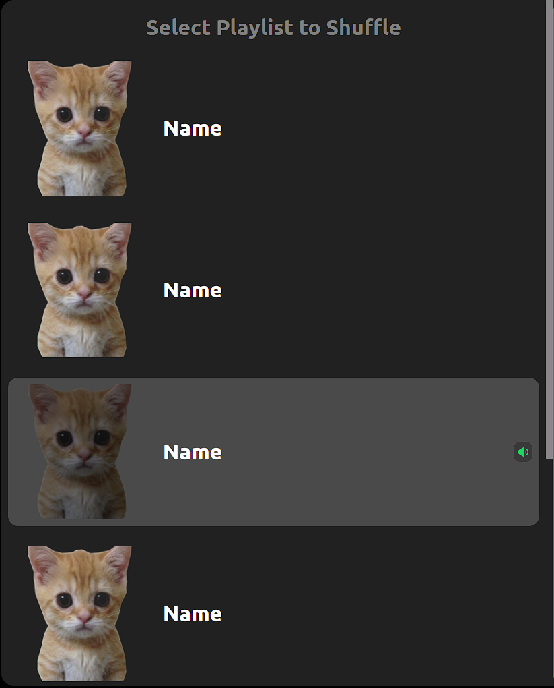
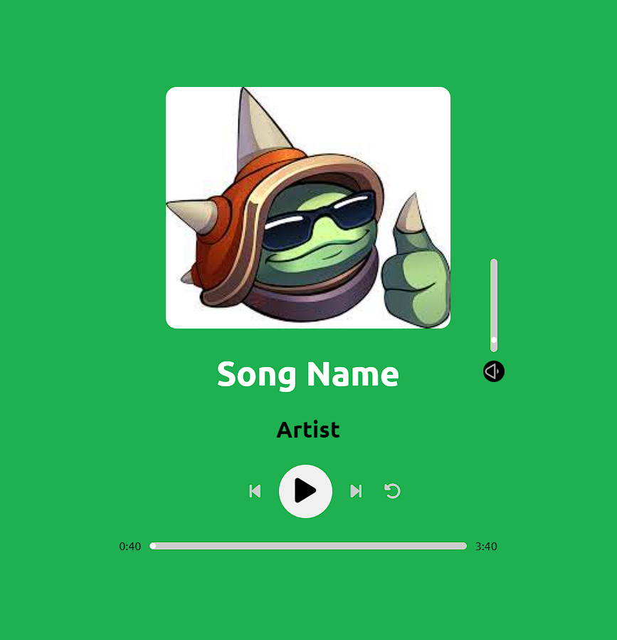
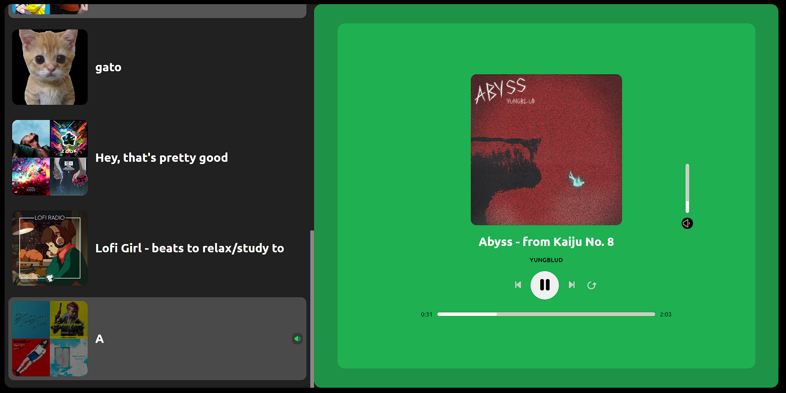

I like music but what I dont like is Spotify's bad shuffle feature.
There are countless posts and videos about this topic and so I made my own web app to solve this issue
since Spotify doesn't want to give us a truly random shuffle alongside the current shuffle.
I have noticed that whenever I add a new song onto my playlist and hit the shuffle button, this song "somehow" gets shuffled into
the top 20-50 songs everytime. I also feel that popular artists are favoured, I have some Ariana Grande, Ellie Goulding and Dua Lipa songs,
and they somehow keep playing. I also had Taylor Swift songs on my main playlist but had to remove them because they keep appearing (and I skip them everytime).
I believe it's because my top genre is Pop and I think the shuffle algorithm favours it.
My last complaint was that there have been countless times when I listen to a song and go "Hey, this is really good. Lemme add this to my main playlist".
Only to be met with the prompt "This is already in your [Playlist Name] playlist".
Ok rant over. Now I'll explain my design choices and how I implemented the features.
I already knew what I wanted this web app to be capable of doing before I designed it. I never intended for my web app to replace the Spotify Desktop Application, so a lot of the features of the desktop app are not available on my site. I always wanted this to be a replacement for the Spotify Shuffle/Player. So I went with a minimalist design with heavy inspiration from Spotify's phone and desktop apps, keeping a similar colour palette and small UI features such as turning green when hovering over sliders. I kept the necessary features such as play, pause, next, previous, repeat, volume and music progress. I also made no attempt to create a responsive interface for different screen sizes as the only end user (me) will never be running it on a smaller screen.
First, I designed how the playlist will be displayed and designed the effect of showing which playlist was selected beforehand, by filling it up with a random image. This made it a lot easier to add the playlists name and images after calling Spotify's API.
Design of the playlists. 
Next, I designed the music player itself, and I used the same approach of creating the player itself before syncing it up with the response from Spotify.
Design of the player. 
Final design of the music player. 
The main challenge in this project was actually shuffling the playlist. Spotify's API has an endpoint that allows you to
shuffle a playlist and play it. However, I could not use it. The other way was to provide the the tracks that you wanted to play
and the player would play them in the order provided.
The issue with this approach is that it would require a lot more performance as it meant storing the entire playlist in memory.
Then shuffling it to provide in the body of the API call. I also thought about storing the playlists on the server-side,
but I scrapped this idea as Spotify already has my playlists. Another issue is that some of my playlists contain over 1000 songs and
so I didn't even bother testing this approach as there could be a limit to how many songs I can provide.
My new approach was to shuffle the playlist was to use a sliding window of size 2, to track the currently playing track
and what to play next. To shuffle the playlist, I used create an array with integers equal to the size of the playlist,
and used the Fisher-Yates algorithm to randomise the playlist. After randomising, it would pick the first integer and play the track
at that index and add the next to the queue.
This approach worked, when the current song finished the next in queue would play, the window would slide and add the next one in queue.
The only issue with this approach was that changing playlist would cause the existing song to remain in the queue.
There was also no way to clear the queue as there is not endpoint available.
So I also saw an opportunity to optimize the shuffle function and fix this issue at the same time.
Fisher-Yates works but having a shuffled and non-shuffled section in the array. Each iteration it would randomly pick one
unshuffled element and place it in the shuffled part. This will repeat until the array is completely shuffled.
Since I have over 1000 songs in my main playlist, most of these songs won't be played before I change the playlist or restart
the shuffle. So rather than shuffling the entire playlist, I would randomly pick one song from the non-shuffled part of the array,
move it to the shuffled section and add it onto the queue when the song was nearing completion.
At the time of writing this (24/4/24) the web app is mostly completed, with a couple of bugs present that I might get around to fixing.
Nothing that completely break the program though.
Below is a demo and the code if you wish to view or test
(idk how the Spotify authentication will work as I never signed out of Spotify)(I am the only end user).